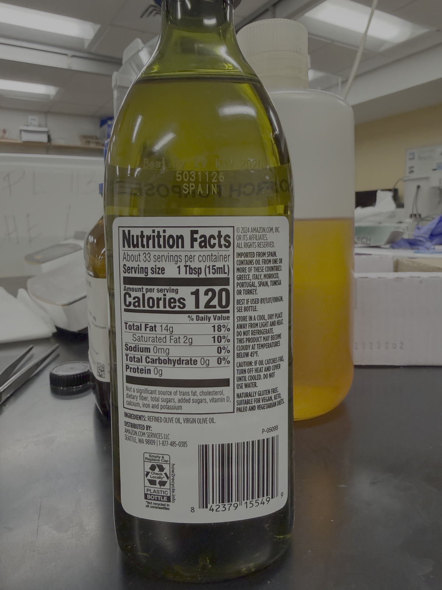
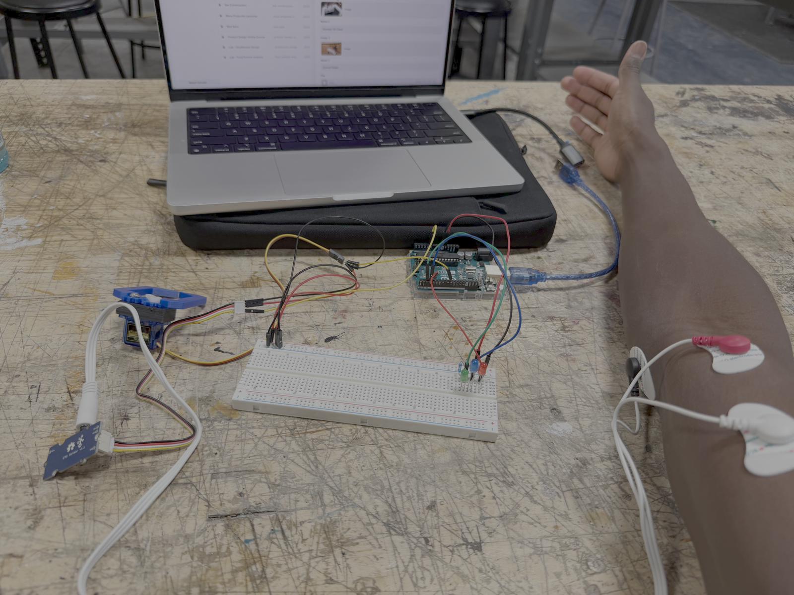
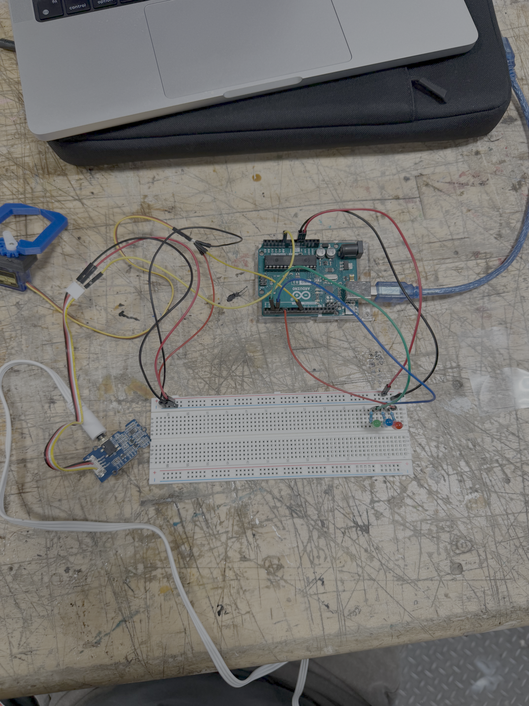
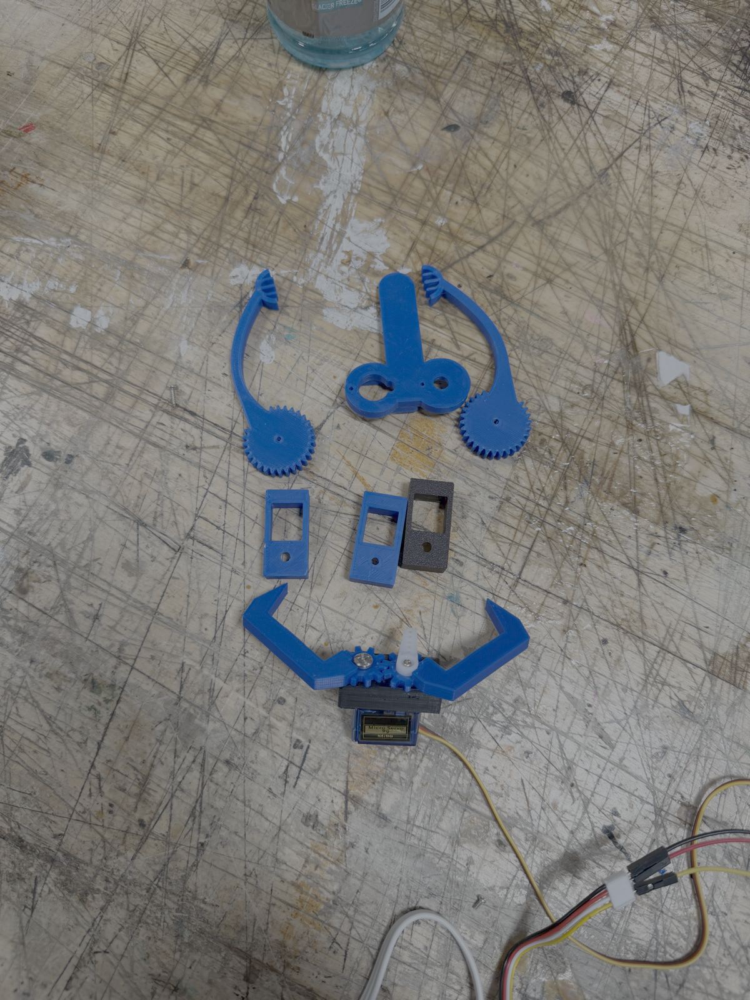
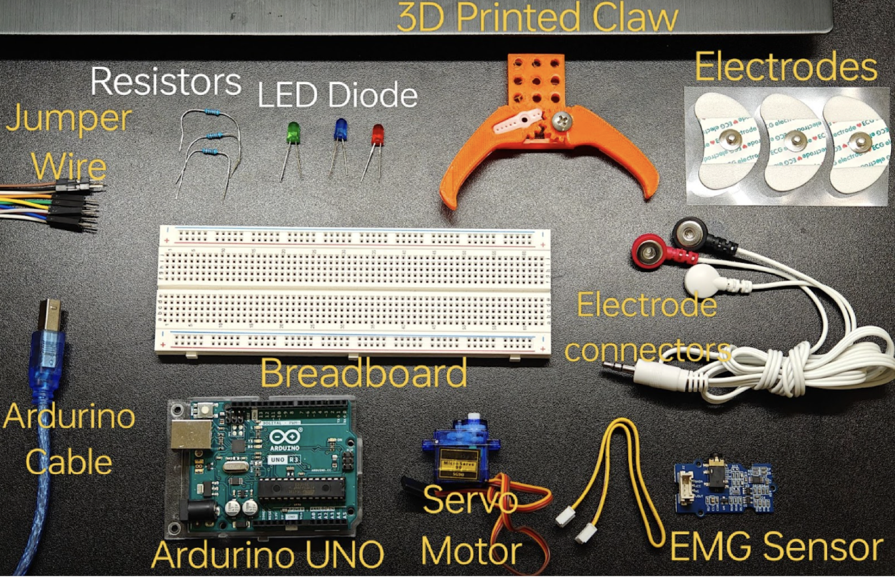
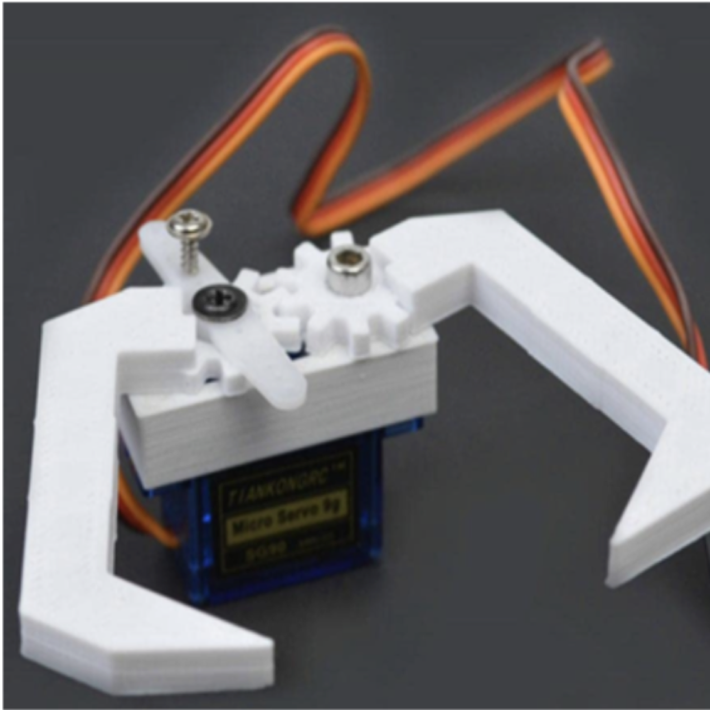
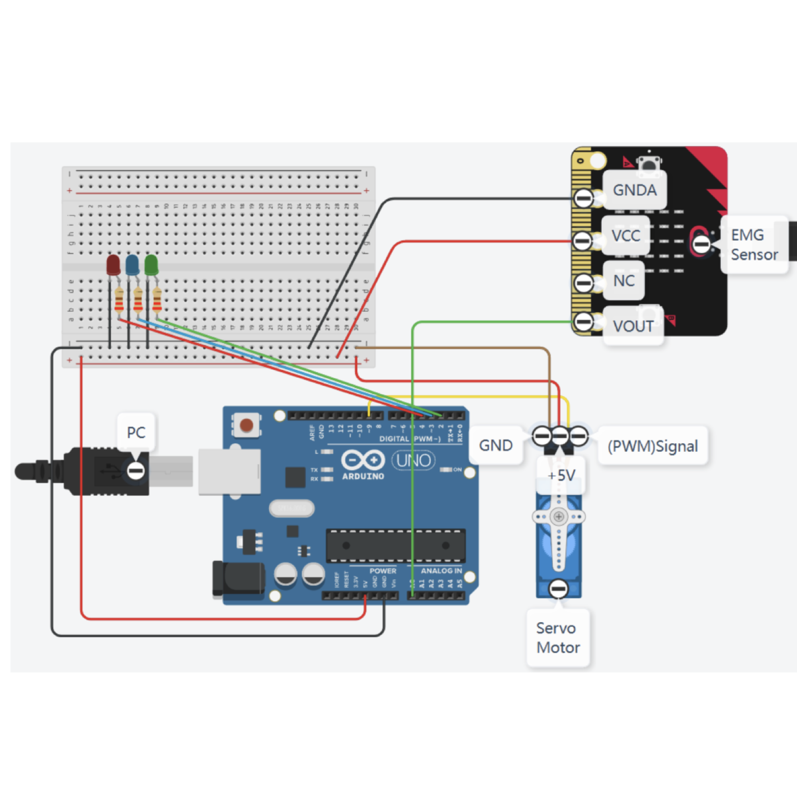
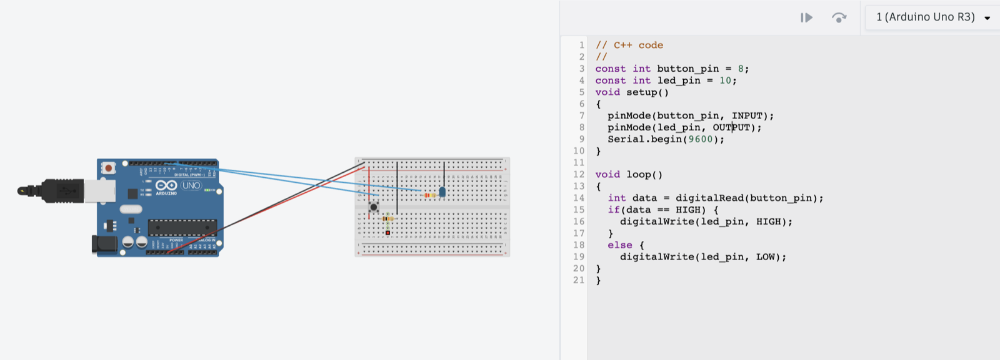

EMG Claw
Solo EMG Claw design project based on an assignment from Brown University Professor Marissa Gray. Worked with EMG sensors, Arduino, and servo motors to use EMG signals to control the claw.
Project Description
The EMG (Electromyography) sensor detects electrical activity produced by skeletal muscles. When the muscle contracts, the sensor captures the electrical signals and sends them to the Arduino, which processes these signals to control the movements of a servo motor connected to a claw. This setup enables the servo claw to open and close based on the muscle activity detected by the EMG sensor.
The servo design involved a servo box, fashioned to fit a 6-32 screw and #6 hex nut. There is a left and a right claw, that closed and open based on the movement of my bicep. Within the Arduino IDE, I watched the serial monitor output to see what EMG values were being output. The average when my arm was still was roughly 305, and approached 700 with hard bicep flexion.
The most challenging part of this project for me was creating the servo box, which I 3D printed 4 different times. I made continued slight adjustments to fit my desired screws, and had to make small adjustments to the depth of the box so that the servo motor would fit nicely.








